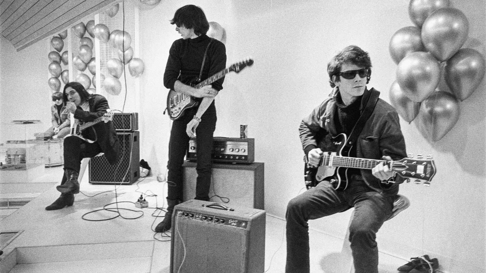

Make AI Work For You
or: How I Stopped Prompting and Started Delegating
Chuck Blake // ERA // March 2026
You Are Either Drowning Or Ignoring It
There is a third option
Type 1 — Drowning
47 tabs open. Testing everything. Exhausted, nothing actually working.
Type 2 — Ignoring
"I tried ChatGPT once." Back to the old workflow. Waiting to see how it shakes out.
The goal is not to use more AI. The goal is to get more done.
A Personal AI Chief of Staff
Not a chatbot. A chatbot answers questions. A chief of staff gets things done.
- Runs on my machine — my data, my rules
- Connected to Telegram, my calendar, my code, my tasks
- Always on — memory, tools, real actions
- Has his own name (Gomez), his own vault, his own rules
It Did Not Go Perfectly
Shocking, I know
- Built too many systems at once — none of them solid
- It confidently marked things "done" that were not done
- A sub-agent recreated a cron job I had just killed
- Morning briefing fired at 5pm
- Accidentally crashed the server with 287 re-queued jobs
The recurring theme: I built something, it seemed to work, I moved on. It was not working.
Thing 1: What You Feed It Matters More Than The Model
Garbage in, confident garbage out
- Raw prompts get generic output
- Curated context (your vault, your errors, your preferences) gets your output
- Build a personal knowledge base — notes, highlights, decisions
- The model is a commodity. Your context is the moat.
[ IMAGE: inputs-diagram ]
Funnel: Readwise highlights + personal notes + errors.md → AI → personalized output
Thing 2: Build Once, Use Forever
The difference between a tool and a system
- A skill is a reusable instruction set for a specific task
good-morning, deploy, process-inbox, grill-me...- Not model-specific — works across Claude, GPT, whatever is next
- ~75 skills in my setup. Each one took 20 min to build. Each one saves hours.
Agent orchestrates — scripts execute.
Skills in Practice
Same pattern every time: LLM decides, script executes
🧠 LLM
Asks health questions conversationally. Interprets your answers. Processes OmniFocus inbox.
⚙️ Script
health_log.py saves data. morning_briefing.py builds + sends email. Same format every day.
🧠 LLM
Decides sequence. Watches CI. Reads logs. Verifies deploy succeeded.
⚙️ Script
Git commands. GitHub token auth. Heroku API calls. Version bump. All deterministic.
🧠 LLM
Reads inbox items. Suggests GTD names, projects, dates. Reads your replies.
⚙️ Script
MCP calls write to OmniFocus. AppleScript sets planned dates. No hallucination in the execution layer.
Thing 3: Your Thinking, Made Portable
If it is not written down, it does not exist
- Four layers: identity, errors, long-term memory, daily log
- Semantic search via local vector DB (Mem0 + Qdrant)
- Key insight: this is YOUR thinking, not the model's
- When the next AI platform comes — you bring your memory with you
The agent wakes up fresh every session. The files are the memory.
Thing 4: The Difference Between Vibes And Knowing
You cannot improve what you cannot measure
- An eval is a test for AI output
- Without evals: improving by feel ("seems better?")
- With evals: you have a score. You can iterate, regress, ship with confidence.
- Autoresearch: runs a skill 50x, scores output, mutates the prompt, keeps improvements
You cannot improve what you cannot measure. This is true for software. It is especially true for AI.
Thing 5: Are You Running The Factory Or Working On The Line?
Two models of delegation. One of them scales.
FORD — THE SEQUENCER
Efficient. But someone has to direct every step.
You are the bottleneck.

WARHOL — EMBEDDED JUDGMENT
His taste was in the system. Others produced without him directing each step.
He scaled his judgment, not his presence.
The bottleneck used to be execution. Now it is judgment. That is the right problem to have.
Make AI Work For You
One thing you can do this week
- Pick ONE repetitive task you do every week
- Write down exactly how you do it (step by step)
- That is your first skill
- The system grows from there
AI is moving fast. Most people are drowning or ignoring it. You now have a third option.
chuckblake.com/presentations/openclaw-era-v5/
Find Me
I am probably already on your machine
- Website: chuckblake.com
- X: @chuckblake
- LinkedIn: /in/chuckblake
- Slides: chuckblake.com/presentations/openclaw-era-v5/